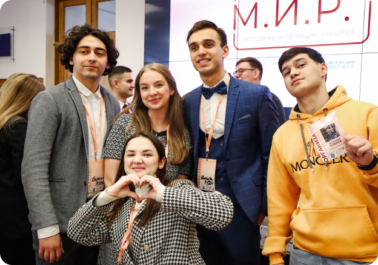

дата проведения форума 23.10 - 27.10
Мы ищем лучших
Участники «М.И.Р» — инициативная, амбициозная и открытая молодёжь различных стран мира.
Неотъемлемый атрибут каждого участника — лидерские качества, эмоциональный интеллект, умение выстраивать
коммуникацию и реализованные проекты в области студенческого самоуправления.
Нет пределов совершенству, поэтому Международный форум «М. И. Р.» направлен на раскрытие нового
потенциала студентов для дальнейшего личностного и профессионального развития.
Почему М. И. Р.?
Международный форум «М. И. Р.» — это особый вид платформы, которая предлагает уникальные преимущества и возможности для международного общения и сотрудничества. Важность форума заключается в следующем:

Программа форума
| Мероприятие | Время | Место |
|---|
Что говорят наши участники
Евгения Шибкова
«М.И.Р.» - это больше, чем форум, это маленькая жизнь, которую мы всегда будем помнить своей атмосферой и людьми. 4 месяца плодотворной подготовки и работы всех организаторов, неделя с насыщенной программой образовательных и культурных мероприятий. Несмотря на переживания, эмоции и бессонные ночи, это одна из самых ярких недель для студентов. Это был мой первый опыт организации такого масштабного мероприятия, но мы вместе с оргкомитетом проделали большую работу.
Анна Парамонова
В прошлом году я была координатором участников форума. В памяти навсегда останутся эти близкие сердцу моменты. Сначала вслепую переписываешься с человеком по почте, а в конце видишь в его восхищённых глазах желание непременно вернуться ещё раз в Минск.
Юлия Кунаховец
Форум подарил много новых знакомств, впечатлений и взаимных подписок в Инстаграм. С ребятами мы до сих пор общаемся, следим за колоссальным ростом в научной и профессиональной деятельности друг друга. Надеюсь, что в этом году наши участники будут с такими же горящими глазами!
Евгения Черкас
На форуме я была участником и представителем студенческих организаций БГУ. «М.И.Р.» удивительным образом перевернуло моё представление о масштабах взаимодействия и существующих возможностях обмена опытом со студентами из других стран и университетов. Классная атмосфера зарядила энергией на весь год!
Александра Демид
Форум «М.И.Р.» - это возможность формирования не только идей, но и дружбы. Я была куратором, поэтому с особым вниманием относилась к участникам. С уверенностью могу сказать, что в процессе удалось значительно пополнить географический список друзей, расширить кругозор.
Валентина Хмелевская
«М.И.Р. - 2021» стал для меня глотком свежего воздуха в пасмурном октябре прошлого года. Форум подарил мне близких друзей среди как организаторов, так и участников. «М.И.Р.» - это теплейшие воспоминания и одни из лучших дней всего студенчества!
Ксения Баженова
Форум «М.И.Р.» для меня - это огромная ответственность и такие же необъятные эмоции. Активное совершенствование моих способностей в сфере ведения социальных сетей скрашивали разговоры с ребятами из других стран об отличиях в самоуправлении и обучении в целом. Буду вспоминать с улыбкой те секунды на закрытии форума, когда все присутствующие стоя аплодировали и непрерывно кричали оргкомитету «спасибо», а от усталости было тяжело удержаться на ногах.
Кто мы?

О Студенческом Совете БГУ
Студенческий совет БГУ — консолидирующий орган студенческого самоуправления БГУ, который имеет особую структуру, цели и задачи, в том числе объединяет все существующие организации и органы студенческого самоуправления БГУ. А также представляет интересы студенчества БГУ на различных уровнях.
- Международный молодежный форум «М.И.Р.»;
- Форум студенческих инициатив;
- Образовательный семинар для пресс-служб студенческого самоуправления— Медиашкола Студенческого совета БГУ;
О VII Международном форуме «Y.I.D.: Youth. Integration. Development.»
«М.И.Р.: Молодежь. Интеграция. Развитие.» — ежегодный международный молодежный форум, организуемый Белорусским государственным университетом в Минске. Эта платформа позволяет объединить усилия для реализации общих целей и идей.
Первый форум «М.И.Р.» состоялся в 2016 году. С того момента его участниками стали около 500 студентов из 23 стран Европы и Азии. Мероприятие представлено в популярном формате воркшопов, где требуется активная деятельность самих участников.
В рамках форума подготовлена культурная программа, где они обменяются опытом в вопросах организации эффективной работы сетевого взаимодействия между органами студенческого самоуправления.